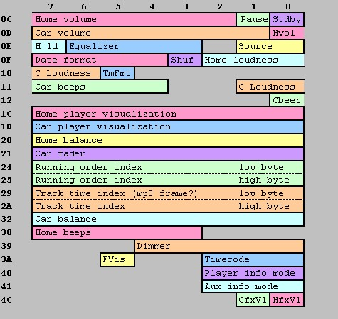

The player opens /dev/empeg_state and can store up to 126
bytes of info (well, it has a 128 byte block but there's a CRC-16 at the end).
In case of a power fail, the kernel dumps the latest complete
/dev/empeg_state 128 byte block to flash.
On power up, the kernel finds the latest valid block in flash and makes it
available in /dev/empeg_state.
The kernel has to do it as there are, well, hard real-time constraints on
the task - like running out of power to the CPU and flash :)
The following diagram shows some of the more interesting areas of the 128-byte flash save area. It's not complete yet but it's getting there.

The Y axis denotes the hex offset from the flash base address, the X axis denotes the bit position within that byte. Because some settings go across byte boundaries, the diagram is color-coded.
Some details...
The bit labelled "shuf" is always 1 when any shuffle mode is active, and there seem to be various other bits and bytes which change based on the custom shuffle modes. I couldn't get a handle on those.. But when shuffle is off, the "shuf" bit (Offset 0x0F, bit 3) is 0, when any shuffle mode is active, that bit is 1.
Bytes 24 and 25 constitute a 16-bit sequential index into the current running order on the player. I hope to eventually use this index to grab the current FID number somehow.
Bytes 29 and 2A constitute a 16-bit number which represents the position within the current track. This might be the number of MP3 frames, or some number of milliseconds or something like that, not sure.
Numbers like balance and fader are 0 if they're in the center, negative if they're (right | rear), positive if they're (left, front). So if your balance setting is one "tick" to the left, the value in this byte is 0000001. If the balance is one tick to the right, it's 11111111.
Contributed by Hugo Fiennes and
Tony Cebzanov
Back to Top